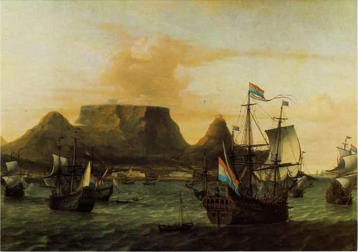
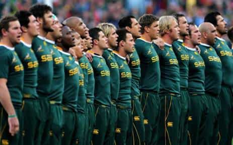
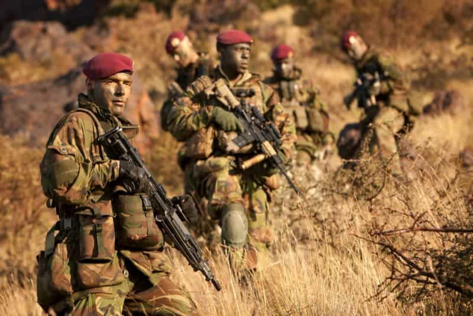
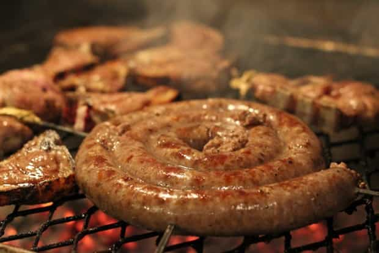
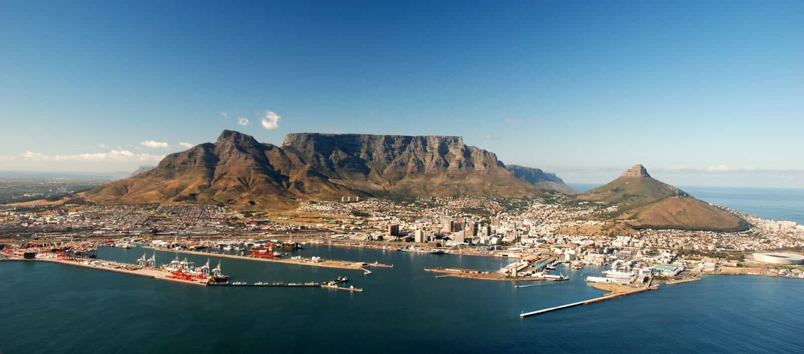
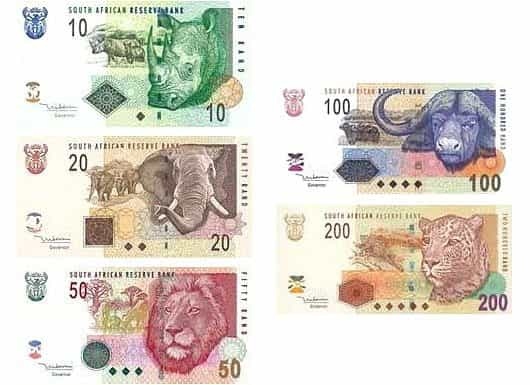
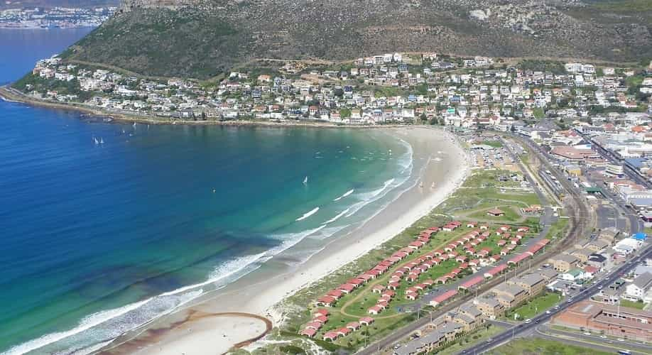

South Africa is a country recognized perhaps mostly for its history of apartheid laws, much like the segregation of blacks in America almost a century ago. The only difference is that the South African government actually enforced segregational race policies as law. This involved a race hierarchy, with Whites on top, Indians (“Asians”) second, “Coloureds” third, and Blacks right at the bottom, which is still evident in most parts of the country where one can see specific areas dominated by one or two of the aforementioned races.
South Africa and the USA share many similarities, as I reveal in this article, but also many differences. Anyway, let me stop rambling and get to the point of this article, which is, why you should visit this amazing country.
1. Strong masculine culture and history

Settlers arriving at The Cape of Good Hope
Although hotly debated nowadays, the fact remains that the early settlers from Europe (predominantly Dutch) brought civilization to this country when they arrived in the Cape 1652, and although they were not the first to discover this land (the Khoikhoi and San inhabited the area), they ultimately made it what it is today (as it is with most of the developed colonies).

These guys treat their sport as war between nations
War has almost defined this country. The early settlers had to fight numerous wars with natives, perhaps most notably in the “Battle of Isandlwana” on 22 January, 1879, in which the outnumbered British suffered a humiliating defeat from the fierce Zulu warriors…
But the wars were not limited to simply those between natives and settlers. Fast forward two hundred years and you’ve got the Anglo-Boer War between Afrikaners (or “Boers”) and the British, which lasted from 1899 to 1902.
Don’t forget South Africa’s amazing war effort during WW1 and 2, and also their famous Special Forces team, commonly known as “Recces” (their logo is my profile image)

Hierdie ouens vat nie kak nie! (English: These guys don’t take shit!)
2. Women
South Africa has produced countless Miss World’s and Miss Universes and, being a multicultural country, a man can find here, in order of highest population size: black women, colored women (mixed white and black), white women, and Indian women.
If you’re into black girls, many of them still value traditional gender roles so you’re in luck there. They can be found all over this country.
Coloured women in the Cape Town area are pretty Westernised but still tend to value traditional gender roles, however your best bet for coloured women would be in the more conservative and rural towns of the Western and Northern Cape. You’re also likely to find a large portion of Muslim “Cape Malays” which are also classified as “coloured”, but from experience I’ve found that these girls tend to be prettier than their non-Muslim counterparts for some reason.
White women fall into two camps. I think it’s safe to say that the majority of English-speaking white women are liberal and about as Westernised as in first World countries. However, the Afrikaner women are mostly conservative and you will find the majority of these in the Gauteng, Pretoria, and Free State provinces.
Candice Swanepoel, an Afrikaner model for Victoria’s Secret
Lastly if you’re looking for Indian women, you can find most of them on the east coast of the country in the province of KwaZulu-Natal.
3. Cuisine

This is a “braai”, not a barbecue, bru
This is definitely one aspect I missed sorely while on holiday in Europe. The food quality in general was just poorer than what I’m used to.
I may be biased because this is my home country, but South Africa has, arguably, some of the highest quality food on the planet. In the Cape, you’ve got a Mediterranean climate, so fish like snoek, hake and yellowtail are commonplace.
The wine industry in the Western Cape is also very big and produces some of the finest wines in the world. Lots of fruit and vegetables are grown in the Western Cape due to the climate, and therefore it is quite an interesting region to stay in
Further inland you’ve got most of the livestock farms with sheep, cattle, and poultry. Beef and lamb are the main sources of meat in this country, not pork as in most European countries. While here, you cannot leave without trying “potjiekos” (stew cooked in a cast-iron pot over a fire), snoek (fish species found in Cape Town), and “boerewors” (the best sausage you will ever taste, guaranteed).
4. Scenery and wildlife

Where else in the world can you get such an exceptional view?
In South Africa, you will find some of the best scenery in the world. Starting at Cape Town, where you’ve got “Table Mountain” (so named because of its flat top resembling a table). Moving inland is the Karoo which is semi-arid, and further inland is the eastern part of the country where you can visit the Drakensberg mountains on the border of Lesotho.
Not to mention the huge variety of wildlife this country has to offer, of which the “Big Five” would be most famous (the animals are featured on our old bank notes!).

5. Beaches

Fish Hoek beach, voted n0. 1 by both humans and Great Whites
You will find some of the best beaches in the area surrounding Cape Town. These include Fish Hoek, Muizenberg, Clifton, Boulder’s Beach, Blaauwbergstrand and Langebaan Lagoon to name a few. There are also beaches in Durban and all along the southern coastline but I can’t really say much about those as I’ve never been there.
6. Great weather
With a subtropical climate, South Africa has fairly predictable weather and receives sunshine for about 300 days a year. This is one of the things I missed during my trip to Europe last year, and when I got back I was instantly rejuvenated with the sunlight (not really, it was winter when I returned, but you know what I mean).
Week-long Itinerary
Below is an example of places you could visit in a one-week trip.
-
Cape Town, Western Cape: Table Mountain; Fish Hoek Beach (located in False Bay, the most shark-infested area of the world); wine-tasting in Constantia; Chapman’s Peak (beautiful views); Stellenbosch (university town – plenty of white Afrikaner babes)
-
Limpopo, Mpumalanga: Kruger National Park (one of the largest game reserves in Africa)
-
Johannesburg, Gauteng: Cradle of Mankind
-
Lesotho: Drakensberg Mountains (bordering Lesotho and several South African provinces)
Conclusion
So, whether you’ve never even heard of it before, or if you’ve already considered a trip to this highly advanced African country, I’m sure you will find much to love about this country once you’re here. I look forward to writing more about my country in future articles, where I will discuss the good, the bad and the ugly.
Anyways, I wish all of you the best while here (I trust you’ve booked your plane ticket already?) and that you at least survive in this (currently) crime-ridden and corrupt—but also awesome and unique—country that I call home.
Read More: 5 Reasons You Should Maybe Visit Sri Lanka